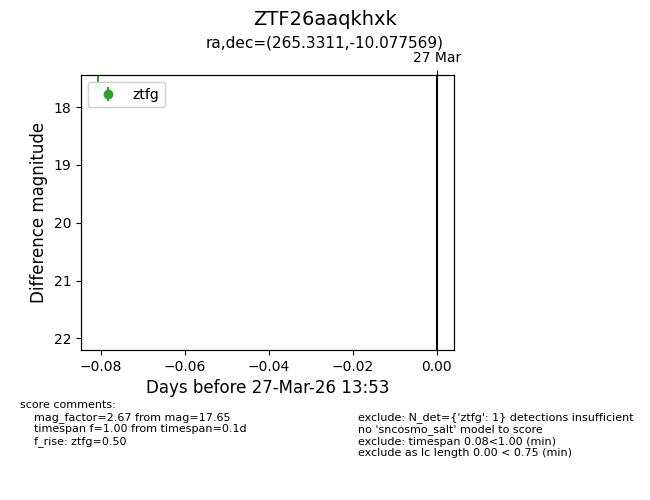
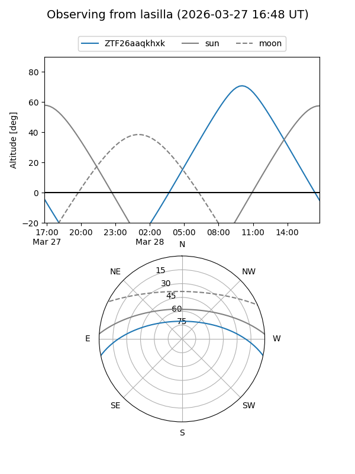
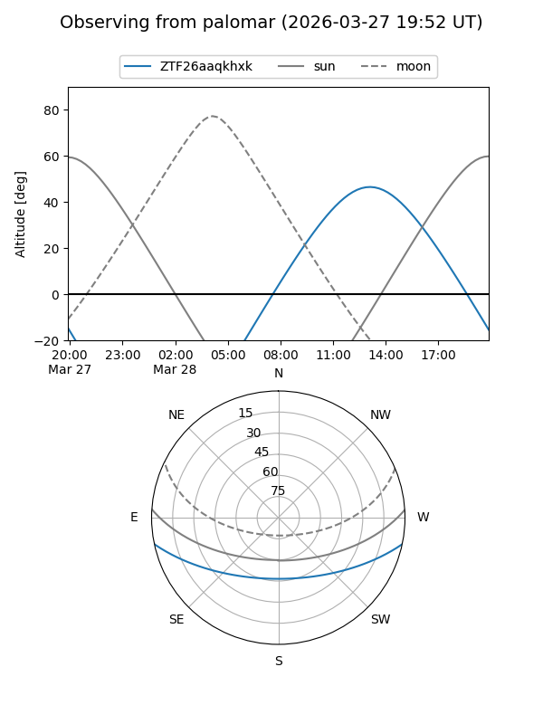

ZTF26aaqkhxk
Target ZTF26aaqkhxk at 2026-03-27 13:56
Aliases and brokers:
FINK: link
Lasair: link
ALeRCE: link
alt names
ZTF26aaqkhxk (ztf,fink_ztf)
Coordinates:
equatorial (ra, dec) = 265.3311,-10.07757
equatorial (HMS+DMS) = 17:41:19.45,-10:04:39.25
galactic (l, b) = (15.7141,+10.60992)
Flags:
Photometry:
last ztfg=17.65
1 ztfg detections
Lightcurve

Visibility


Additional plots